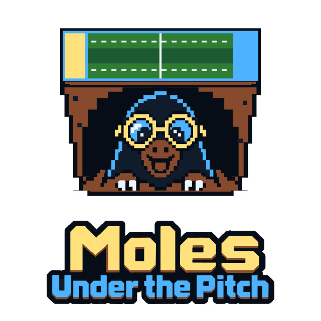
Pitch camera references
Historical artwork only. Open the corrected MUTP gallery for exact 26 × 15 pitch dimensions and centered players.
The supplied end-on perspective is the default direction. A fixed isometric preset is the preferred parallel-grid alternative to review; adjustable yaw is deferred.
Site pixel art, navy/cyan/gold accents, and translucent HUD surfaces. Select any image to inspect it at full size.
Reference-style perspective
Selected default direction
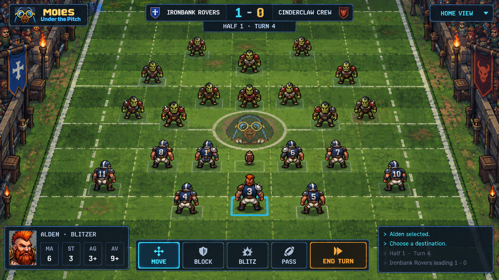
Home coach
55° elevation target · 0° yaw · perspective
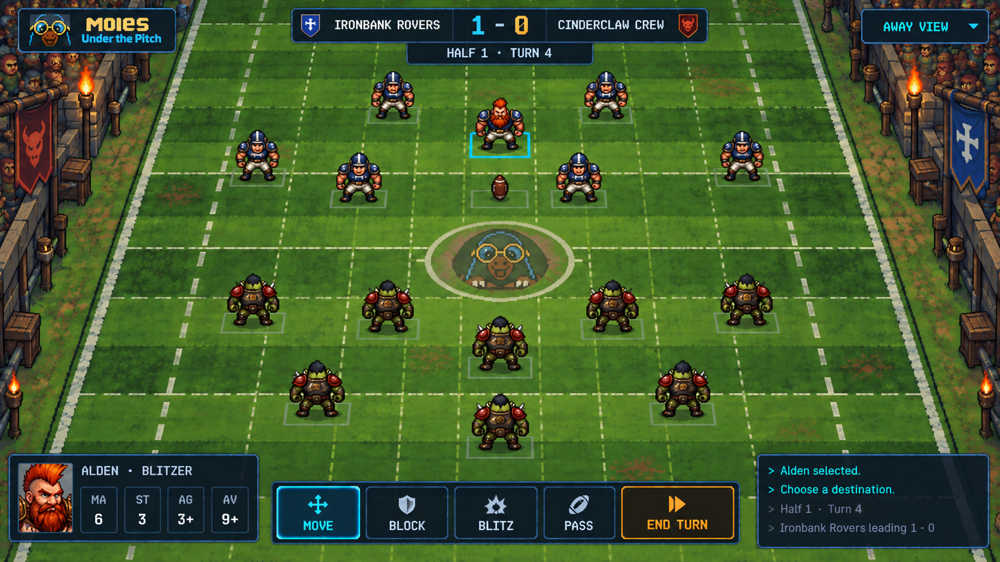
Away coach
55° elevation target · opposite end · perspectiveEnd-on parallel grid
Consistent-size comparison
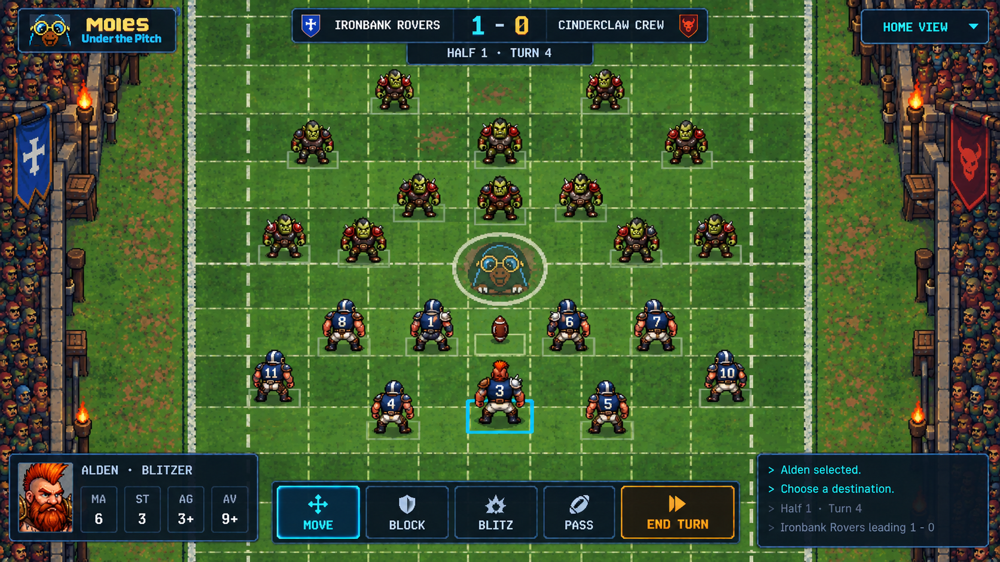
Parallel / orthographic
55° elevation target · 0° yawFixed isometric
Preferred parallel-view alternative to review
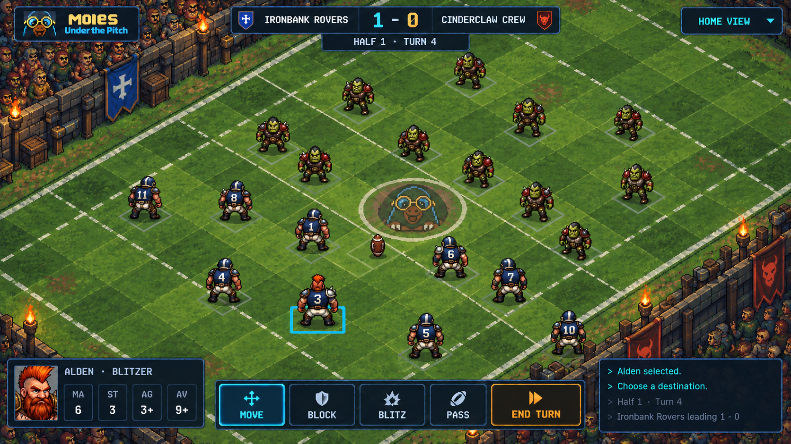
Classical isometric
35.3° elevation target · fixed 45° yaw · parallelLower, more dramatic view
Elevation study
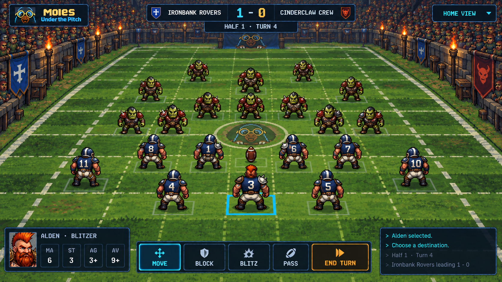
Lower perspective
45° elevation target · 0° yaw
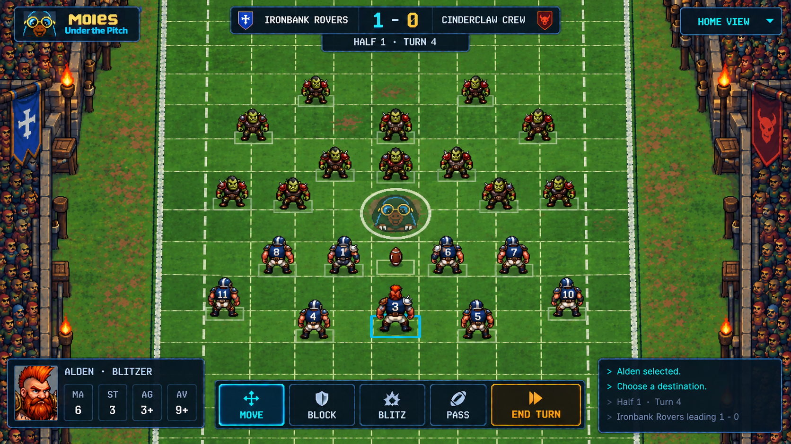
Lower parallel
45° elevation target · 0° yawHigher tactical view
Elevation study
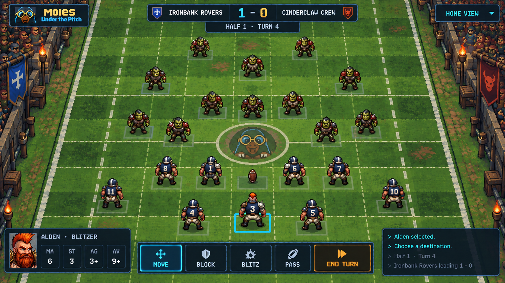
Higher perspective
65° elevation target · 0° yaw
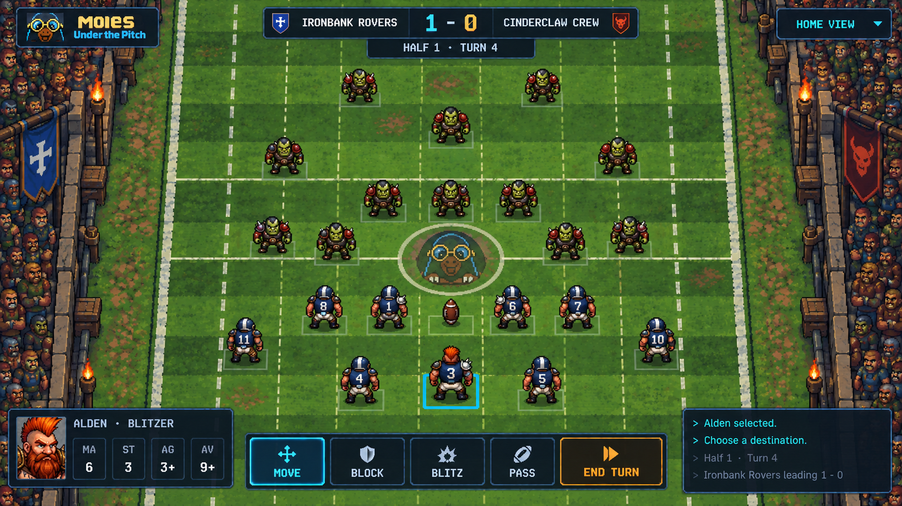
Higher parallel
65° elevation target · 0° yawSlight three-quarter yaw
Deferred enhancement
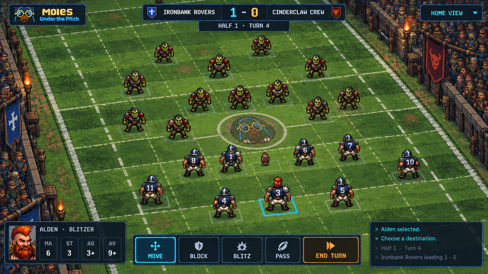
Left yaw · perspective
55° elevation target · −15° yaw target
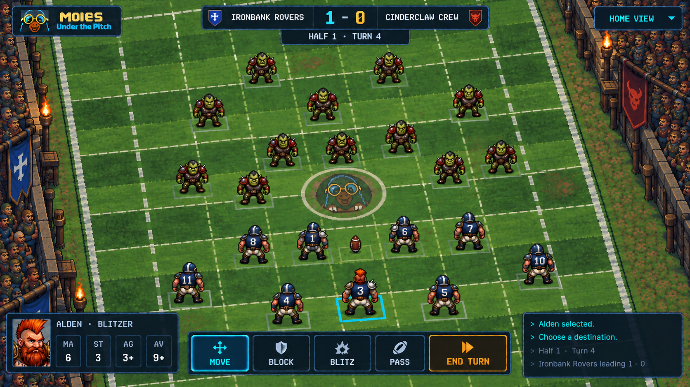
Left yaw · parallel
55° elevation target · −15° yaw target
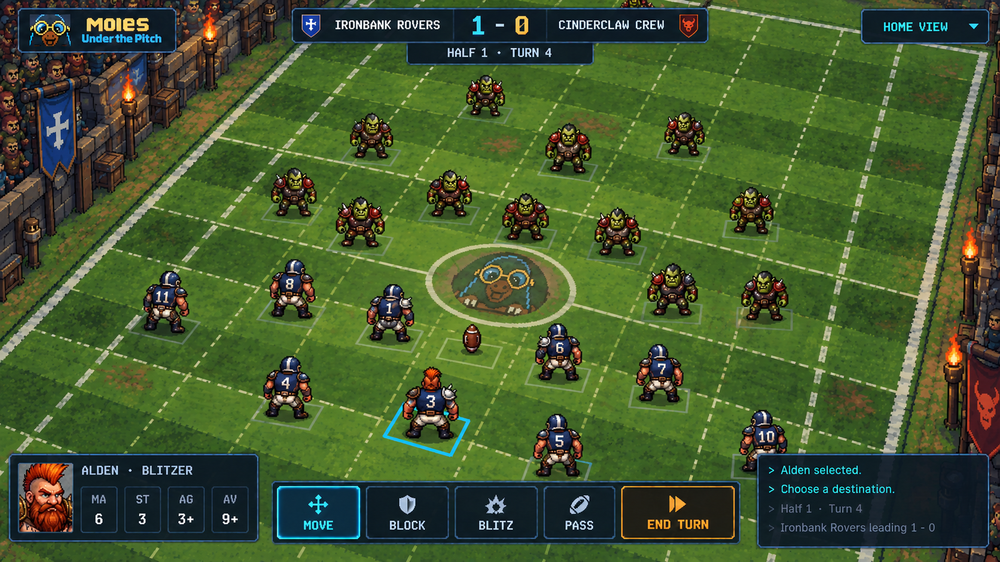
Right yaw · perspective
55° elevation target · +15° yaw target
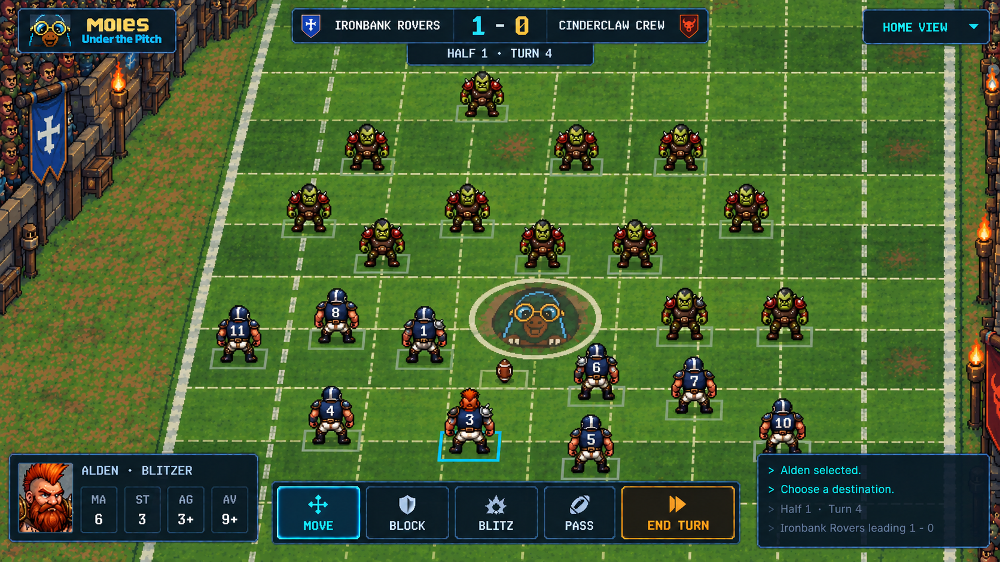